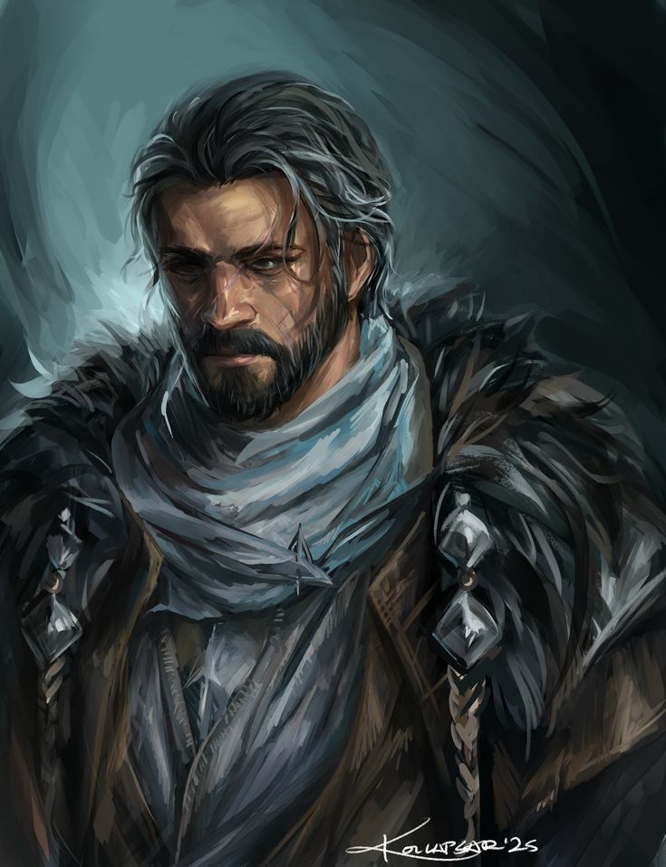

| Lorn Stark | The Sword Kharven, House Stark as of the morning of the seven lines in the Hall of Verdicts |
| Epithet | the Sword the north’s name for him, said in one breath with Godfrey Greymane, the King’s Shield; at Hollenmark he is still Ulf’s lad, and men who have only seen the blade in its scabbard say the Sword carries a rider’s sword |
| Concept | He scratches a line in the snow, swears to hold it, and whatever crosses it freezes. |
| Stat line | Stage V Splintering · Expert (Faceted) Level 190 · Refined · unclassed until Glory Body IV Mastered, unread · Fate III Walked 30%, unread · Lenses: none on file, the Stark cold in their place |
| Combat grammar | Blade |
| Aura | color: the Stark cold rather than a Wellspring’s hue: a warm dark gray at Flourishing’s clarity with a hard white rime over it that silvers timber and stiffens snow round his boots; in the cold of the great hall at Kharven-Seat the frost stood in a nap on the fur of his bear mantle |
| How he moves | He stands with his weight even on both feet and his hands still at his sides, and he crosses a hall or a field at the Stark walk, heavy, even, unhurried, the weight going straight down through the heels. |
| Stack | sustainable 275 in Penetration, Fortitude, Constitution, Finesse and Reflex, the Stage roof cap two steps on the hidden scale over the sustainable figure layers: FROSTFALL when called, a sworn vow when spoken |
| Bonded weapon | the Stark sword; his father’s axe rides on his back unbonded |
| Kit | his father’s mail too big across the shoulders, a brown road coat, a black bear mantle, two braids of caged crystal and his father’s axe across his back, and the piece people talk about first: a Very Rare sword that looks like it cost a pig |
| Voice | ”By the sky that covers us. House Stark. To the red chair, and to the man in it.” speaker type: a young sergeant made general overnight, who learned to speak from a father who never wasted a word |
| Next gate | Stage VI, Glory Catalyst: a soul-cost accepted for something, chosen knowing the price holds at Level 115, which his 190 already passes: only the Catalyst is wanting, and past Level 200 without it he would come into Residual Strain |
I. Identity
| Field | Value |
|---|---|
| Full Name | Lorn Stark |
| Pronunciation | LORN STARK |
| Alias / Title | The Sword: the north’s name for him beside Godfrey, the King’s Shield · Warlord of the Starks by his father’s word and death · Captain of the Guard at Kharven-Seat, in the years after the four worlds parted |
Also Known As
| Name | Who says it |
|---|---|
| Ulf’s lad | Hollenmark |
| the Stark at the door | Muken’s household |
| Field | Value |
|---|---|
| Race / Lineage | Human, Kharven northern stock · House Stark of Hollenmark, the Ironwood March, carrying the Stark cold in the blood |
| Age | Thirty-eight |
| Realm / Faction | Kharven; House Stark, sworn to Muken Moto |
| School and sect rank | The Hollenmark drill-yard, from the time he could walk Warlord of the Starks since his father’s death |
Renown
| Among | What they say of him |
|---|---|
| the public | the Stark who caught the king on the frozen road |
| the army | leads the Stark vanguard, three hundred riders and four hundred at the Seat, and they follow him because they followed his father |
| the sects | none |
| the guilds | none |
| epithet | the Sword |
| Field | Value |
|---|---|
| Catalyst Event | His father Ulf Stark kneeling beside Wystan Greymane under the Kurenai blade, after taking him onto the wall-walk in the dark and telling him the secret of Muken’s blood in twelve sentences |
| Refusal | He will not let go of a thing he has sworn by the sky to hold, whatever it costs him or whoever asks |
| Conviction | A Stark serves because the Crown serves, and for exactly as long as it does; that is not disloyalty, it is the only honest kind of loyalty there is |
| Arc kind | Positive: the son growing into the father’s mail |
II. Soul Architecture
| Field | Value |
|---|---|
| Level | 190; it holds Splintering (101), and no Residual Strain builds in him short of 200 |
| Temperance Stage | V, Splintering · Expert |
| Path | Body IV Mastered · Fate III Walked 30%. Body opens his sword-arm and his footing; Fate opens the line he draws and the oaths he keeps |
| Mastery | unread on Body and Fate, below Glory, and no grip by blood or blessing to open either early |
| Yield (η) | 0.60, the foot of what a hall expects of an Expert |
| Soul Crystal | Faceted |
| Crystal State | Refined, and cold to the touch of anyone who reads it |
| Class | Unclassed; the soul first offers one at Glory |
III. Wellspring Harmonizations
Field
The Stark cold
Value
not a Wellspring an inheritance older than the Moto and older than the Starks’ own records, which works outside the Wellspring framework and which the Starks do not discuss with outsiders; it draws heat out of everything near the bearer and drives it down through his heels into the ground, harder the more he feels; the house’s blood moves heat out, not in
IV. Primary Stats
| Primary | Total | Mean |
|---|---|---|
| Vitality | 910 | 113.75 |
| Ardency | 685 | 85.625 |
| Gnosis | 50 | 6.25 |
| Dexterity | 1,115 | 139.375 |
| Harmonics | 120 | 15 |
| Resilience | 710 | 88.75 |
| Tempering | 80 | 10 |
| Dominion (seven, Throne apart) | 380 | 54.29 |
| Throne | not opened | · |
| Pool | 4,050 | |
| Unspent | 0 |
V. Sub-Stats
| Primary | ||||||||
|---|---|---|---|---|---|---|---|---|
| Vitality | Fortitude 270 | Absorption 120 | Constitution 260 | Hemostasis 40 | Regeneration 20 | Filtration 10 | Tolerance 180 | Threshold 10 |
| Ardency | Flux 180 | Alacrity 0 | Depth 80 | Penetration 275 | Compression 60 | Cascade 60 | Overchannel 0 | Density 30 |
| Gnosis | Perception 30 | Acuity 0 | Forecast 0 | Fluency 0 | Retention 0 | Analysis 0 | Cognition 0 | Vigilance 20 |
| Dexterity | Celerity 200 | Reflex 270 | Finesse 270 | Economy 230 | Evasion 30 | Grapple 95 | Feint 0 | Sequence 20 |
| Harmonics | Attunement 0 | Projection 0 | Breadth 0 | Stability 60 | Empathy 40 | Synergy 0 | Axis 20 | Suppression 0 |
| Resilience | Integrity 180 | Ward 0 | Persistence 0 | Anchoring 220 | Fortification 60 | Hardening 20 | Oath 230 | Continuity 0 |
| Tempering | Clarity 0 | Overflow 0 | Maturity 30 | Coherence 30 | Yield 20 | Ceiling 0 | Capacity 0 | Longevity 0 |
| Dominion | Radius 60 | Sovereignty 0 | Sense 20 | Gravity 80 | Pressure 200 | Command 20 | Fate 0 | Throne not opened |
| Note | A sword-arm and a set of feet. Penetration, Fortitude, Constitution, Finesse and Reflex carry the fight; Oath 230 carries the man. Gnosis and Tempering are nearly empty: he does not read people, he watches them, and he has never refined anything in his life that he could drill instead. |
VI. Force of Hand
| Measure | Figure | Feat | Carried by | Note |
|---|---|---|---|---|
| Strike Force | Penetration 275 | on the sword’s edge and point | Penetration 275 | |
| Lifting | Constitution 260 | — | Fortitude and Constitution | |
| Travel speed | Celerity 200 | 514.5 to 1,715 m/s | Celerity 200 | |
| Reaction | Reflex 270 | 1 to 5 ms | Reflex 270 | |
| Durability | Fortitude 270 | — | Fortitude | and he caught a king’s elbow in the ribs on the frozen road and did not let go |
VII. Aether Flow
| Measure | Figure | Note |
|---|---|---|
| EU Reserve | 715,286 EU | |
| Flux Density | 6,500 EU/g | |
| AU/s | 2,925 | |
| From full | empties in 4 minutes 5 seconds at full output, Starvation at 3 minutes 40 seconds | |
| Recovery | ten percent a minute at rest | faster in hard cold, which the Stark blood does not mind |
VIII. Traits
Full accounts: Lorn Stark — Abilities
Below Glory his Mastery is unread, and every Trait works at its base.
| Trait | Kind | Source | Path and Form | Gates | What it does | Limit | Tell | Cost | Counter | Numbers |
|---|---|---|---|---|---|---|---|---|---|---|
| STARK RIME | Inherited | — | Path Body · Lens the Stark cold, the house’s inheritance (no Wellspring) · Form Shape | none on the card | The cold in the Stark blood. The warmth goes out of everything within a few paces of him and down through his heels into the ground, and it runs harder the angrier he gets. | It moves heat, and cannot make it: on frozen ground or in deep winter it has little to take, a man already as cold as the snow gives it nothing, and against a great heat it is a bucket against a fire. And the heat has to have somewhere to go: when the ground under his heels is itself inside the fire, he is only carrying heat from the air round the king into the earth under the king, and it comes straight back. Its named failure is the full sink: nowhere left to put the warmth, and the frost stops where it stands. | His breath stops steaming and his beard whitens. | Nothing he notices; he has never been warm in his life and does not miss it. | Heat, and calm: a hot room, a furnace, a fire-worker; or keeping him steady, since a Stark who is not angry is only a cold man. A far stronger presence does the same work as a fire, driving his frost back toward his own boots before a blow is struck. | — |
| A LINE IN THE SNOW | Primary | — | Path Fate, Walked: a border claimed, with the Body’s cold laid along it · Lens the Stark cold (no Wellspring) · Form Claim | none on the card | The sword’s point dragged through the ground, and a low white wall of cold stands up along the scratch. Cross it toward what he guards and your fingers stiffen, your breath catches and your feet go out from under you. a low white wall of cold stands up along a scratch, and whoever crosses it toward what he guards crosses into the full cold | He must stand on his side of it; the line is his, and if he steps over it himself it is only a scratch in the snow, because the claim is that this ground is his and that ground is not, and a man who steps over his own border has unsaid it. Its length is one stroke of the arm and a step, a few yards, never a wall round a city. It needs a whole breath to set, half to draw and the rest to plant his feet and bring the point down, and against a fighter who can cross eighty paces inside that breath it is never drawn at all. | The point of the sword dragging through the ground. | About 2% of his reserve to draw, near 14,000 EU, and a little to hold. | Go round the ends, or come at him from the side the line does not face. | — |
| BY THE SKY THAT COVERS US | Secondary | — | Path Fate, Walked: a vow, which is small Fate and spends his own share · no lens · Form Bind | none on the card; Oath 230 prices it | Right fist to the breastbone, once, hard. While he keeps what he swore, fear does not reach him, pain comes late, and the arm that holds does not open. | The oath’s own words; it holds what he said and nothing else, and he chooses his words like a man choosing footing on ice. It breaks by its own terms the moment he breaks it. | Right fist pressed once, hard, to the breastbone. | Nothing to swear; everything to keep. The price shows on him at once: he goes stiller and plainer, and he can no more do the thing he swore against than put his hand through a wall. | The oldest one in the north: set two of his oaths against each other, so that keeping one breaks the other, and he stops between them like a cart with a wheel in each rut. | reserve: none · Oath: 160 |
IX. Skills and Abilities
Full accounts: Lorn Stark — Abilities
Skills
| Skill | Cues / mechanics | Learned where | Priced by (Sub-Stats) | Mark | Rank |
|---|---|---|---|---|---|
| The Stark Sword | drawn from the walk without changing feet; the point to the ground first, then the bind held a breath long, then one plain cut | the Hollenmark drill-yard | Penetration, Finesse | Drilled | Journeyman |
| Horsemanship in snow | short northern horses, deep drift, riding by knee | Hollenmark | Economy, Constitution | Mastered | Journeyman |
| Vanguard command | ride at the front, say it from the wall, then go back to the floor | his father | Pressure, Command | Drilled | Apprentice |
| Grappling | hold, do not throw; set the feet and wait for the man to tire | the drill-yard | Grapple, Fortitude | Drilled | Journeyman |
| Woodcraft | which ice holds, which wind brings snow, where the deer go | the Ironwood March | Perception, Vigilance | Mastered | Initiate |
Techniques
| Technique | Kind | Mark | Source | Path and Form | Gates | What it does | Limit | Tell | Cost | Counter | Numbers |
|---|---|---|---|---|---|---|---|---|---|---|---|
| WHERE IT ENDS | Signature art | — | — | Path Body Mastered for the cold, the blade and the feet; the Walked Fate for the line and the oath · Lens the Stark cold, the house’s inheritance (no Wellspring) · Forms Shape, Strike, Claim and Bind | none written on the card | he scratches a line in the snow, swears to hold it, and whatever crosses it freezes | — | — | He cannot let go: what he has sworn to hold he holds past sense, and when FROSTFALL falls, all the cold he was holding comes home into him at once. | Heat, and keeping him calm. Go round the ends of the line. Carry bronze, copper or a warm blade. Make him hurry. Set two of his oaths against each other. | — |
| THE BREAKING COLD | Signature Technique | Drilled | Lived | Path Body · Lens the Stark cold (no Wellspring) · Form Strike | none on the card | Blade against blade, and frost-flowers bloom across your steel. The next hard blow it takes, it breaks like glass. | It works only on iron and ordinary steel; bronze and copper and the few fine steels that never go brittle in the cold take no harm from it at all. Its failure is plain: the wrong metal, or a bind broken before the frost has crossed, and the cold spreads into the air for nothing with a twentieth of his reserve gone after it. | Frost-flowers bloom on your blade: the frost-flowers on the blade. | About 5% of his reserve, near 36,000 EU, and the Measurewrights reckon the cold that crosses the bind at some sixteen gigajoules. | Bronze, copper, or a warm blade. Before, carry bronze or copper; during, disengage and let the steel warm before you strike with it again; after, a blade that survived its chill is as good as it was. The frost has to cross the bind before the blades part, so a swordsman who will not bind with him, who slips, voids and cuts at the hands, never gives it a road. | — |
| THE STARK WALK | House Art, Stark | Mastered | Taught · page: House Stark | Path Body · no lens, no working · Form Strike, as footing | none on the card | Heavy, even, unhurried, the weight straight down through the heels. He cannot be shouldered off his line or tripped, and he draws without changing his feet. (House Art, Stark.) | — | heavy, even, unhurried, weight down through the heels | No reserve. | Make him hurry, because a Stark who runs has stopped walking it. | — |
| DOWNHILL TO THE FIRE | Technique | Held | Lived | Path Body · Lens the Stark cold (no Wellspring) · Form Shape, used as a sense | none on the card | His cold runs toward the nearest great heat like water downhill, so he knows where the fire is standing before anyone has seen it. | It tells him where a fire is and nothing else: not who, not how strong, not whether it means harm; and with his Gnosis as empty as it is, the body is the only instrument he has. It needs a heat far above the day’s, and one source; a camp of cookfires or a smithy drowns it. | The rime will not form on the side of his beard that faces you: the lopsided beard and the frost round his boots creeping one way. | No reserve. | Stand among other fires, or be no warmer than the wood. | felt for: a quarter mile · placed at: eighty to ninety paces |
Vows
| Vow | Sworn to or before | Binds and lifts | Stands |
|---|---|---|---|
| The oath his father swore him to, by the sky that covers us | his father, on the wall-walk | — | kept |
| His oath to the red chair and to the man in it | at the foot of the dais this morning | — | sworn |
| ”I’ll keep him this side of the line, my prince. By the sky that covers us.” | to Sodoku Moto, the crown prince, at the door of the great hall at Kharven-Seat the night Mizuyi was taken, after one look from Sodoku down the table | binds him to keep Sonzai Moto this side of the line; BY THE SKY THAT COVERS US holds what he said and nothing else | kept so far: he kept Sonzai on the west wall through the night and stood under the colonnade arch through the brothers’ fight at the west gate without moving. If Sonzai rides, Lorn goes after him and his oath goes over the line with him, as Sodoku said at the gate |
Releases
| Release | Kind | Mark | Source | Path and Form | Gates | What it does | Limit | Tell | Cost | Counter | Numbers |
|---|---|---|---|---|---|---|---|---|---|---|---|
| ”The sky covers us.” FROSTFALL | First Release | — | — | Path Body · Lens the Stark cold (no Wellspring) · Form Shape | the First Release, open from Stage IV | The First Release, which the north calls the White Sky. Said low. His beard goes white, clear ice runs down his father’s mail, and the ground round him turns to silver. | — | — | about 4,010 EU a second; 3 minutes from a full reserve | Heat, as for the Trait, and its own end: when it falls, the ground round him is ice. | folk name: the White Sky · the line twice as long · the ring ten paces across |
Domain
| Field | Value |
|---|---|
| Note | None yet. |
X. Spirit Axes
| Person | Bond | Axis weight | What flows across it | Note |
|---|---|---|---|---|
| Muken Moto | his king | 20 | the king’s weight one way and the Stark’s grip the other | forged on the frozen road, holding him back with both arms while he fought to go after his sister |
| Ulf Stark | his father, executed | severed by the blade | the twelve sentences on the wall-walk are what is left |
XI. Resistances
| Against | Resistance | Carried by |
|---|---|---|
| Cold | near-immune | Tolerance 180 and the blood |
| Fear and pain while sworn | very strong | Oath 230 |
| Heat | weak; it is the one thing the blood cannot answer | — |
| Mind-work and soul-work | terrible | Ward 0, Cognition 0 |
| Displacement | fair, while walking his walk | — |
XII. Physical Description
| Feature | Description |
|---|---|
| Build | He is a big man, broad and long-armed, and he looks older than twenty-two. |
| Hair | The forty-year war and one winter have put gray into his hair already, long streaks of it through the black at the temples and over the brow, and he wears it long and swept back from his face, loose to the collar. |
| Face and eyes | His face is long and weathered, high-browed, the nose straight and once broken, and he wears a full dark beard kept short and square, with gray coming into it at the chin. His eyes are Stark-blue, pale and cold, and raw at the rims from too many nights without sleep. |
| Clothing | He wears his father’s mail, too big for him across the shoulders, under a heavy coat of brown leather and a great mantle of black bear-fur that swallows his shoulders; a long scarf of pale blue-gray wool wound high round his throat against the wind, the Stark wolf on his breast, and on either side of the mantle a long northern braid of leather cord hung with a pendant of rough clear crystal in a silver cage, the kind the Hollenmark women braid for a son riding to war. |
| The axe, and how he stands | His father’s axe rides across his back. He stands with his weight even on both feet and his hands still at his sides, exactly as his father taught him, and when he moves he moves like a Stark: heavy, even, unhurried. |
Wounds carried
| Where | The wound | What it stops him doing |
|---|---|---|
| Ear | a cut at the Skeldmere that nearly took his ear, still bleeding on the Seat road after | — |
XIII. Psychology
| Field | Value |
|---|---|
| Core Wound | His father told him everything on the wall-walk and rode south to die for it, and asked him to keep quiet for the boy’s sake, and he did, and it cost him every morning |
| Flaw | He will hold on past sense, and he does not hear anything said to him gently |
| Desire | That his father’s men come home from the ice, and that the boy in the red chair be worth his father’s death |
| Strength | He keeps his word, and says his piece aloud in the room |
| Loop | swear, hold, endure, say it from the wall, go back to the floor |
| Foil | Godfrey Greymane, who keeps his loyalty with his hand flat on the table where Lorn keeps his with his fist against his chest |
| Stress Default | stiller and plainer, the jaw working |
Voice block
| Field | Value |
|---|---|
| Speaker type | a young sergeant made general overnight, who learned to speak from a father who never wasted a word |
| Chant tongue | northern Common; FROSTFALL called low in it |
| Lying tell | he does not lie; when he is holding something back, his jaw works on the left side and he looks at the floor three feet in front of him |
| Notices first | where the king is, and who stands between him and the door |
| Speech length | a line, or nothing; a look from his prince is enough to get him up, and he answers it with one sentence and an oath at the door |
| Wit | not built to be funny |
| Accent features | plain northern Common; “my prince” to the crown prince; the oath put at the end of the sentence like a stake driven in |
| House words and sayings | ”By the sky that covers us”, the Stark oath; the first bowl goes to the one who can’t fill it himself, which he took from Rob’s leg at the Foot |
| Sentence length | short, plain, one thing at a time |
| Contractions | sometimes |
| Pet phrase | ”By the sky that covers us” |
| Never says | anything gently |
| Stumbles | no; when he cannot find words he puts his fist to his chest |
| Stress shift | fewer words, the frost spreading |
| Grief shift | silence, and sitting with his back to a door so nobody goes through it |
| Joy shift | the corner of his mouth moves; he feeds the fire |
| How modern | plain northern |
| Sample line | ”By the sky that covers us. House Stark. To the red chair, and to the man in it.” |
XIV. Equipment
| Item | What it is | Grade | Rarity | Rung | Bonded |
|---|---|---|---|---|---|
| The Stark sword | plain northern longsword, wolf’s head on the pommel | B | Very Rare | Siegepiece | yes; it carries FROSTFALL’s rime |
| Ulf Stark’s axe | bearded war-axe, ash haft; plain steel, no working; carried, never swung | plain | Uncommon | — | no |
| Ulf Stark’s mail | northern riveted mail, too big across the shoulders; no working | plain | Uncommon | — | — |
| The crystal braids | two braided leather cords with caged crystal pendants; no working; braided by the women of Hollenmark the night the riders went south | — | Uncommon | — | — |
| The bear mantle and the road coat | great mantle of black bear-fur over a heavy coat of brown leather, the Stark wolf small on the breast | plain | Uncommon | — | — |
| The scarf and the pin | long pale blue-gray wool scarf wound high, a sliver of silver pin at the knot | plain | Common | — | — |
| The spare helm | open-faced northern helm with a nasal, out of the Foot’s stores | plain | Common | — | — |
| His father’s sword-chain | Ulf Stark’s; Lorn sat with his hand on it on the Kharven bench from the moment the dark opened at the betrothal supper | — | — | — | — |
| Item | Item Tier | Look | Maker’s mark | Wear and repairs | How he shows it off | What people say | Price | Other |
|---|---|---|---|---|---|---|---|---|
| The Stark sword | Item Tier Instrument | blue-gray steel from a nickel-rich bloom out of the eastern March, one of the few irons that stays tough under a Stark’s own cold, which is the whole of the expense; a flat iron pommel with the wolf’s head cut in a few shallow strokes, where Rob’s great sword has a snarling head in the round; a grip of plain black leather, gone gray where his thumb rides | Asgerd Holt of the Hollenmark yard, whose stamp is a small boundary stone under the guard | the rime has silvered the fuller and will not polish out | he doesn’t; it stays in a spruce scabbard through most of a fight, and when it does come out its first work is to have its point dragged through the snow | men who have never seen it out call it a rider’s sword, and smiths who have go quiet | about a hundred and fifty gold on the coil, if he ever let anyone put it there | mass / balance: about a kilogram and a half, balanced a hand above the guard · proof-mark the Hollenmark smith’s stamp breaks Tempered plate and passes anything under it, fails against Instrument harness and up |
| Ulf Stark’s axe | — | a broad gray head a hand and a half long, the haft gone black; the grip is worn in a three-finger pattern on the left where Ulf’s maimed hand rode it, and Lorn’s whole hand does not sit right in it | — | — | across his back over the mail, always, and across his knees when he sits against a door | Stark riders look at the axe before they look at him, and the long-house bet is on the first day he swings it | about a gold, if it were anybody else’s | — |
| Ulf Stark’s mail | — | thick dark rings riveted one by one at Hollenmark and oiled nearly black; it hangs off him like a tent off its pole, the cuffs turned back twice | — | he will not have it taken in, and the Stark armorer has stopped offering | he wore it down the black floor of the Hall of Verdicts among harness worth more than his father’s land, and at FROSTFALL it takes a skin of clear ice | the young riders say he will fill it by forty, and the ones who knew Ulf say nobody will | — | — |
| The crystal braids | — | rough clear crystal in small silver cages, two stones point to point on each side like a sand-glass, on plaited brown cord, riding outside the mantle and swinging when he walks; worth more than the mail under them | — | — | — | Hollenmark women can read a plait and say whose hands made it, and they read these and say nothing | — | by the Hollenmark custom one braid is for the going and one for the coming back, and a rider home cuts the second and returns it to whoever plaited it |
| The bear mantle and the road coat | — | the fur long and coarse, gone silver at the tips where the rime gets at it; the leather scuffed tan at the folds and black at the collar | — | one shoulder resewn in sinew in a rider’s big stitches, his own | he stands still in it, which takes up a lot of door | Godfrey’s mantle looks like a lord’s, and Lorn’s looks like something he fell asleep under | — | a black bear and never a white one, because no Stark wears an icebear and then goes home |
| The scarf and the pin | — | woad-dyed Hollenmark wool, the color the city goes at dusk and the only color on him, thin at the fold under his beard | — | the pin has been bent once and straightened | — | a Stark has no use for a scarf, so somebody gave it to him | — | — |
| The spare helm | — | his own stayed on the Skeldmere, and this one has somebody else’s dents; it sits on the saddle more than on him | — | — | — | — | — | — |
XV. Temperance Record
Level log
| Levels | Where they were earned |
|---|---|
| 150 | the forty-year war’s last campaigns at his father’s side, the Foot, the frozen road, the Skeldmere, the march to the Seat |
| 151 to 190 | the sixteen years after the four worlds parted |
Stage ledger
| Stage | Name | Catalyst | Bought | The story in a line |
|---|---|---|---|---|
| I to III | — | — | — | the Hollenmark yard and the eastern frontier, by the book |
| IV | Flourishing | the Spirit Axis with Muken | — | formed on the frozen road with both arms round a king who did not know who was holding him |
| V | Splintering | surviving the Sin of Wrath in the cedar wood | — | FROSTFALL against the Wrath, and still standing after |
| Note | He climbed the Stark way: by drill and by keeping his feet. Nothing about it was quick. All of it held. |
XVI. Fracture Log
| Event | Layer | Status | What it left |
|---|---|---|---|
| Ulf on the black floor | Attraction | processed | BY THE SKY THAT COVERS US |
| Rob’s leg at the Foot | Core | processed | the first bowl goes to the one who can’t fill it himself |
Lore
Full account: Lorn Stark — Lore
Ties
| Person | Who they are to him |
|---|---|
| Muken Moto | his king. Lorn caught him on the frozen road and did not let go. |
| Ulf Stark | his father, Warlord before him, executed beside Wystan Greymane under the Kurenai blade; he gave Lorn the twelve sentences and the oath. |
| Godfrey Greymane | brother-in-arms. Sworn to the same secret the same night by his own father; the Shield beside the Sword. |
| Rob and Mark Stark | his brothers, both in his vanguard until Rob fell in the Hall square at the Seat; Mark rides there still. |
| Yukazuri Moto | the king’s sister, who closed the cut on Rob’s leg at the Foot; Lorn held the king on the frozen road for her sake. |
| Kiyome Byakuya | the king’s aunt, of the white line. |
| Sumie Kurenai | the headsman who killed his father, sitting in the black chair. He has not spoken to her. |
| Sodoku Moto | the crown prince, to whom he swore at the hall door to keep Sonzai this side of the line. |
| Sonzai Moto | the prince he keeps. |
Later years
| Field | Value |
|---|---|
| The night | He sat on the Kharven bench with his hand on his father’s sword-chain from the moment the dark opened, in his father’s mail and his black bear mantle. At one look from Sodoku he got up without a word and went after Sonzai at the Stark walk, stopped once at the door, swore, and went out. He kept Sonzai on the west wall through the night, and his man sat at the foot of the east tower stair with a lantern to tell the queen so. |
| The gate | At dawn he stood under the colonnade arch nearest the west gate, where he had stood since he followed Sonzai out of the hall, and did not move through the brothers’ fight, the near-kill on Sodoku’s thigh or the throw. |
| What he knows | Everything the yard saw at the gate, from the first exchange to the open gate. Sodoku has said aloud that if Sonzai rides, Lorn goes after him and his oath goes over the line with him. |